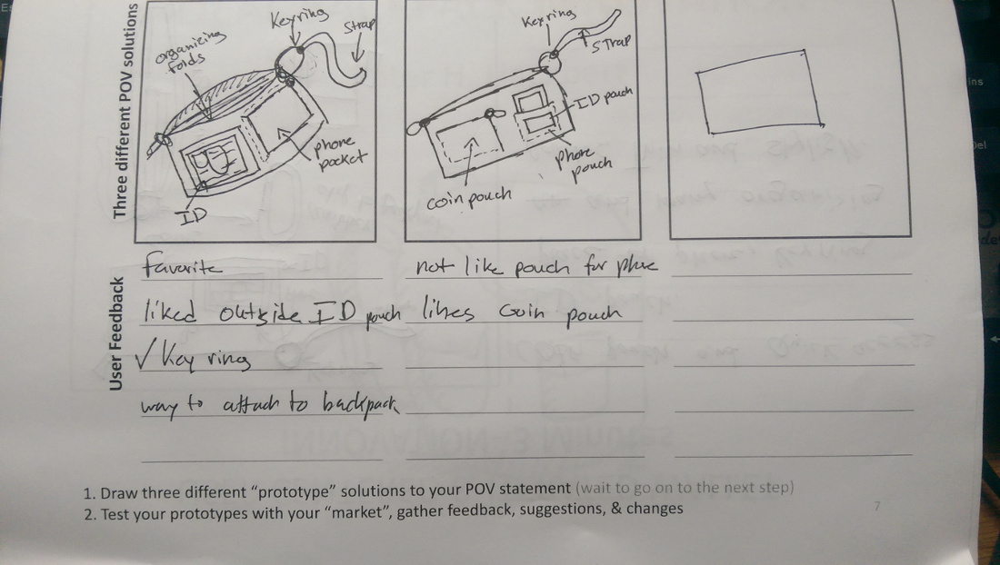
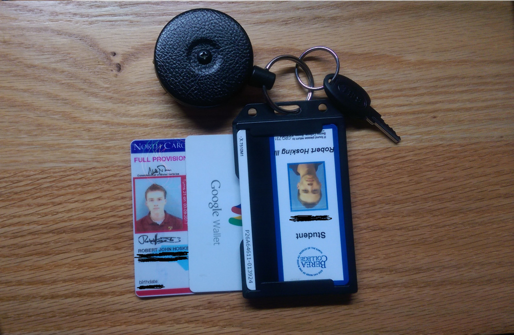
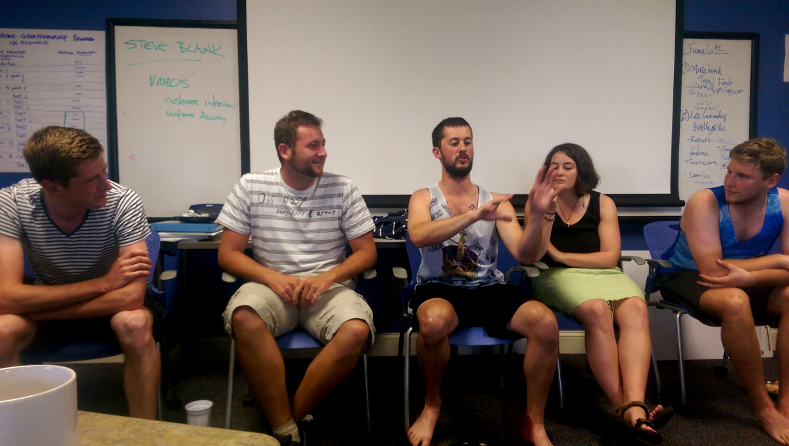

Day 1
We began the day with a user design exercise where our goal was to design a new wallet or backpack for someone in our cohort. We were briefed on the customer empathy process and how to glean information from customers. Next we were paired off and given time to interview each other about our current wallet/backpack standards. We asked each other what problems we faced when using our wallet or backpack and went through a series of design prototypes, running them by the customer each time to gain more feedback until we had designed the perfect wallet or backpack for that individual.
I enjoyed this exercise partially because I have already gone through the process of designing the perfect backpack and wallet for myself. It was also refreshing to see that what I imaged the perfect wallet for me was not the perfect wallet for my customer. Designing for someone else was not a skill that I have worked to develop.
We presented team accomplishment summaries that we worked to create over the weekend. Each team created a presentation that introduces each member of the team and highlighting the team’s accomplishments while in EPG.
After dinner we watched the movie October Sky through the lens of an entrepreneur. We applied what we learned about the Appalachian Region and the entrepreneurial mindset to the story of Homer’s struggles and triumph to gain a new understanding of entrepreneurship.
Day 2
 Prototype designs for a wallet.We began the day by doing some pattern recognition exercises. Then we were told how to use the opportunity canvas and how to interview customers to glean the underlying problem and advance your understanding of what the customer wants.
 My perfect wallet. Though not everyone's.Day 3
We met briefly in the morning to discuss the plans for the next few days since we would not be meeting for class until Monday.
By Monday we were to:
- Go through four revisions of the Opportunity Discovery Canvas by interviewing potential customers to revise the canvas
- For our mid-term project we were to create a presentation outlining an itinerary for a specified customer segment to spend 36 hours in Berea. By copying the New York Times’ “36 Hours” segment, we are combining our learning about a specific customer segment and assembling a potential itinerary for that customer.
- Finally, we needed to organize a trip to a preassigned festival over the weekend. My group was heading to the “Lee County River Festival”
Dr. Hackbert left town around noon that day.
 The five cyclists that we hosted. Follow their stories: The Belgians' website and the Renegades'(Domestic Bikers) Instagram @thewheelsonthebikeHowever, in the absence of Hackbert, we were assigned with the task of hosting some cyclists that we met in Damascus last week. Backstory time… Last week in Damascus we crossed paths with 5 transamerican cyclists. There was one group of 2 men who are neighbors and friends from Belgium who came to bike the TransAmerican Trail after exhausting the major trails in Europe. There was also a group of 3 recently graduated individuals from the states who are traveling together for the escape, adventure, and fun. We spoke to these individuals in Damascus and offered to feed them and provide lodging once they arrived in Berea along their journey. They gladly accepted. Fast forward to Thursday this week, and they arrived in the afternoon and we all convened in the classroom and interview them over some pizza. We gained information about the persona and customer segment of the transamerican cyclist through our talk with them and afterwards students offered to drive them to Richmond for supplies and offered a place to sleep at their apartments.
Day 4 and 5
No class because Dr. Hackbert was out of town.
Day 6 (Saturday)
We met at 10 AM to drive to the “Lee County River Festival” in Beattyville, KY. We arrived and saw no sign of a festival so we asked the locals and they said the festival was not that big and it was down on the sand banks of the Kentucky River. We drove over there after lunch at the ironically named, “authentic Mexican restaurant”, called “Los Two Brothers”. There was not much to report on at the festival. A local band playing bluegrass and six stands selling their goods. There was an organization selling admissions to the rubber ducky race to take place later in the evening. We did our part and spoke to the local business owners represented at the festival and sat for a while listening to music.
While sitting around, we noticed a man getting a lot of attention and giving out autographs. We asked who he was and learned that he was a sort of local celebrity who won third place on “America’s Got Talent” in 2013. We spoke to him about the highs and lows of becoming an overnight celebrity, and of course, everyone wanted a photo.
We decided that we had seen everything there was to see at the festival so we piled in the vans and drove back to Berea. I spent the rest of the weekend working on our assignments with episodes of “Good Mythical Morning” and “Regular Show” playing in the background.